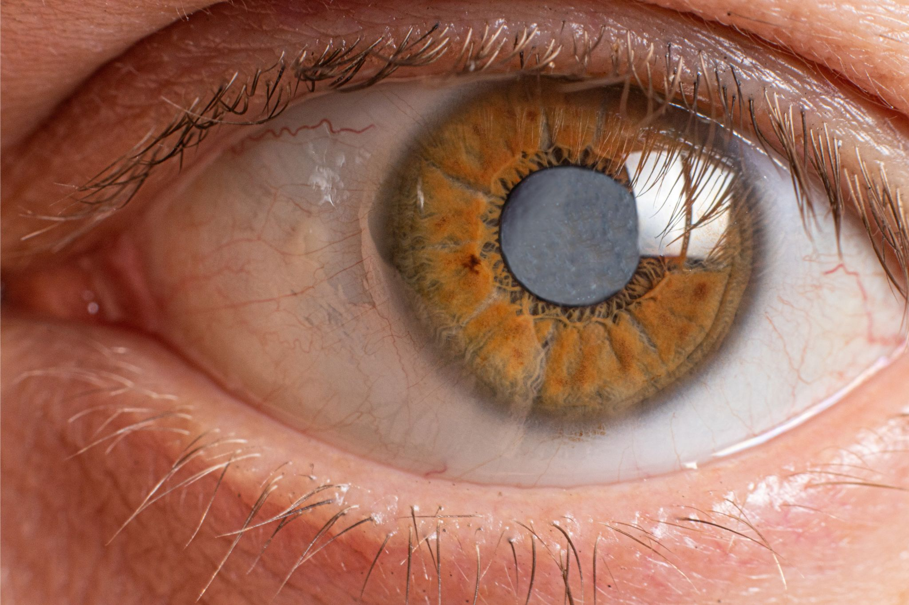
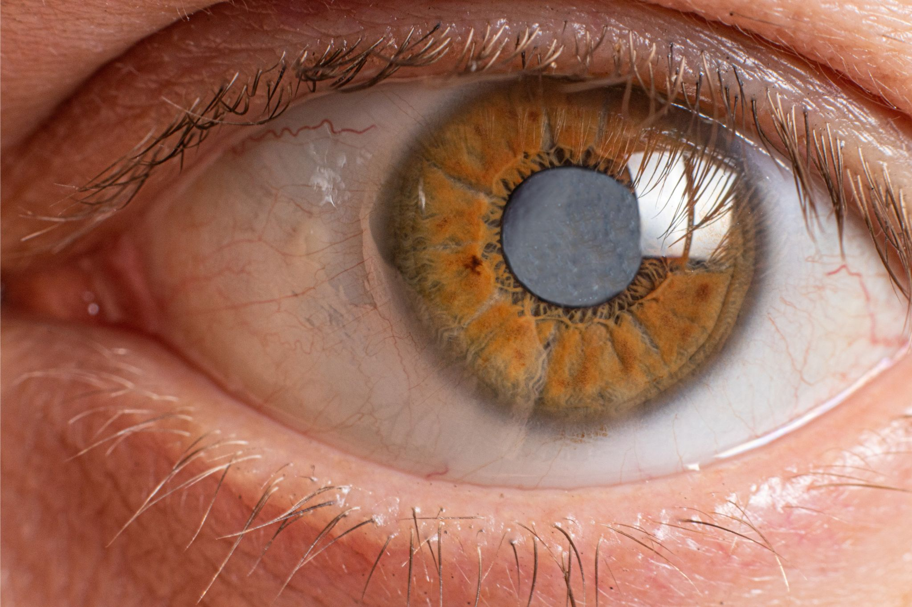

Catarata

Opacidade da lente natural do olho.
A maioria dos casos de catarata desenvolve-se lentamente ao longo de anos.
O principal sintoma é a visão embaçada, como se a pessoa estivesse olhando por um vidro opaco.
Quando a catarata interfere nas atividades normais do indivíduo, o cristalino embaçado pode ser substituído por lentes artificiais transparentes. Este geralmente é um procedimento ambulatorial seguro.

Opacidade da lente natural do olho.
A maioria dos casos de catarata desenvolve-se lentamente ao longo de anos.
O principal sintoma é a visão embaçada, como se a pessoa estivesse olhando por um vidro opaco.
Quando a catarata interfere nas atividades normais do indivíduo, o cristalino embaçado pode ser substituído por lentes artificiais transparentes. Este geralmente é um procedimento ambulatorial seguro.